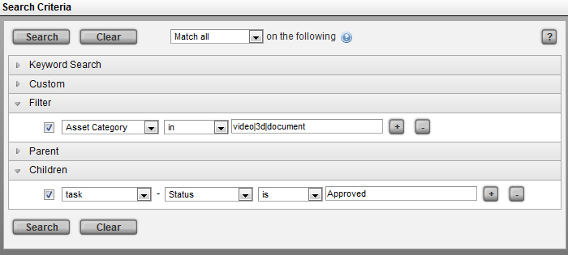
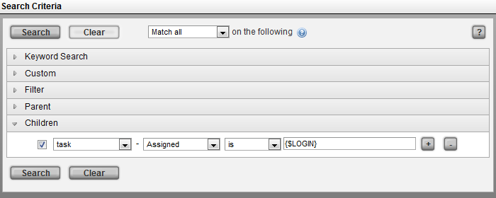

TACTIC provides two main search tools; the Simple Search and the Search Box.
Simple Search
The Simple Search provides a view specific filters. To use the simple search:
-
Load a view of items in your project. In this example a Keywords field is provided and an Asset Category drop-down narrows down the search even further.
-
Fill in the desired search and click the search button.

-
The results view will automatically refresh once the search is complete.
Search Box
The Search Box can be used to conduct more complex searching in TACTIC. To test a few examples, load a view of items in a project which have Tasks. In this example the view is an Asset view.
-
To Search for all assets with an asset category of 'video' , in the following criteria;
Filter -> "Asset Category" "is" "video"

-
To Search for all assets with an asset category of; 'video', '3d', and 'document', enter the following;
Filter -> "Asset Category", "in", "video|3d|document"

-
To search all assets described in example 2 and also include tasks that are approved, enter the following;
Filter -> "Asset Category", "in", "video|3d|document"
Children -> "Task", "Status", "is", "Approved"

-
To find all tasks assigned to the user currently logged in, a simple expression can be used;
Children -> "Task", "Assigned", "is", "{$LOGIN}"

-
To find all assets with a category of 'video' and keyword of 'car' or a code that contains 'car';
Set the top option in the drop-down box to "Compound Search";
Filter -> "Asset Category", "is", "video"
and (click between the filters to activate the and/or)
Filter -> "Keywords", "contains", "car"
or (shift-click between the filters to group the filters)
Filter - > "Code", "contains", "car"

-
To execute complex searches using an expression to find all assets which have check-ins with versions higher than 1;
Filter -> "**Expression", "have", "@SOBJECT(sthpw/snapshot['version', '>', 1])"